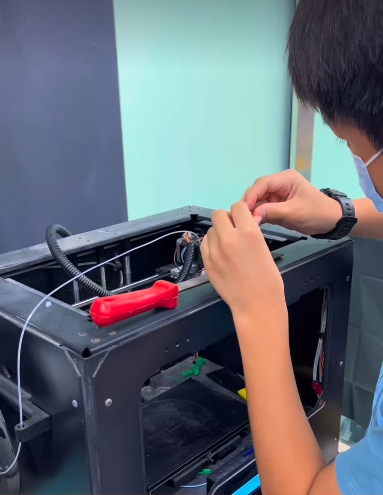
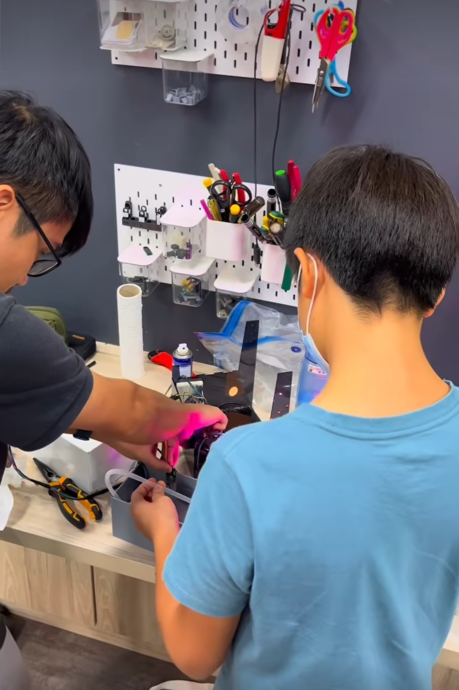
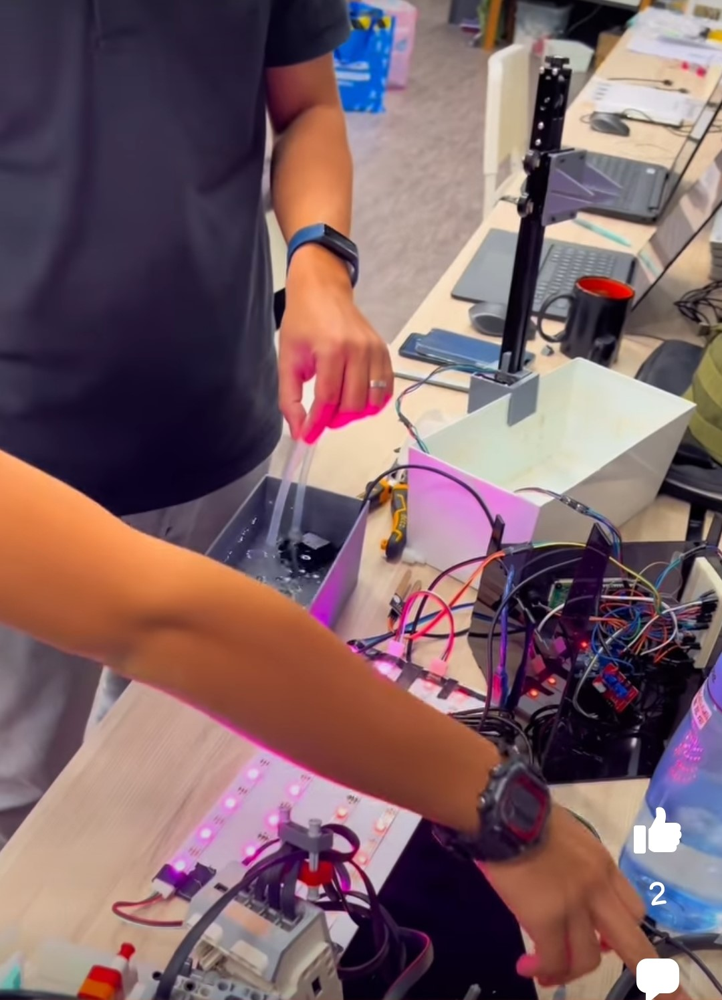
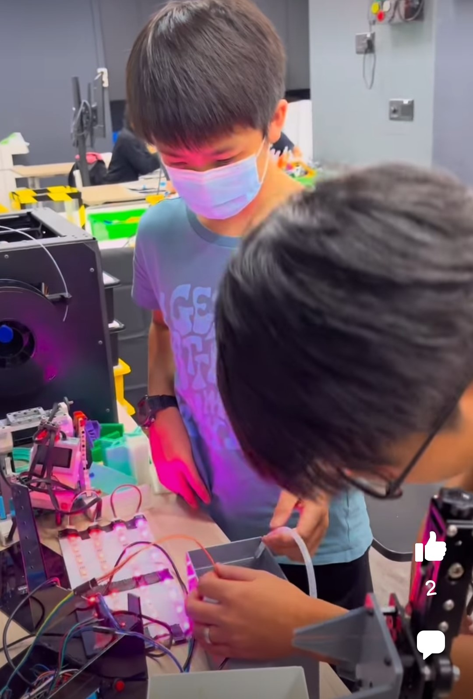
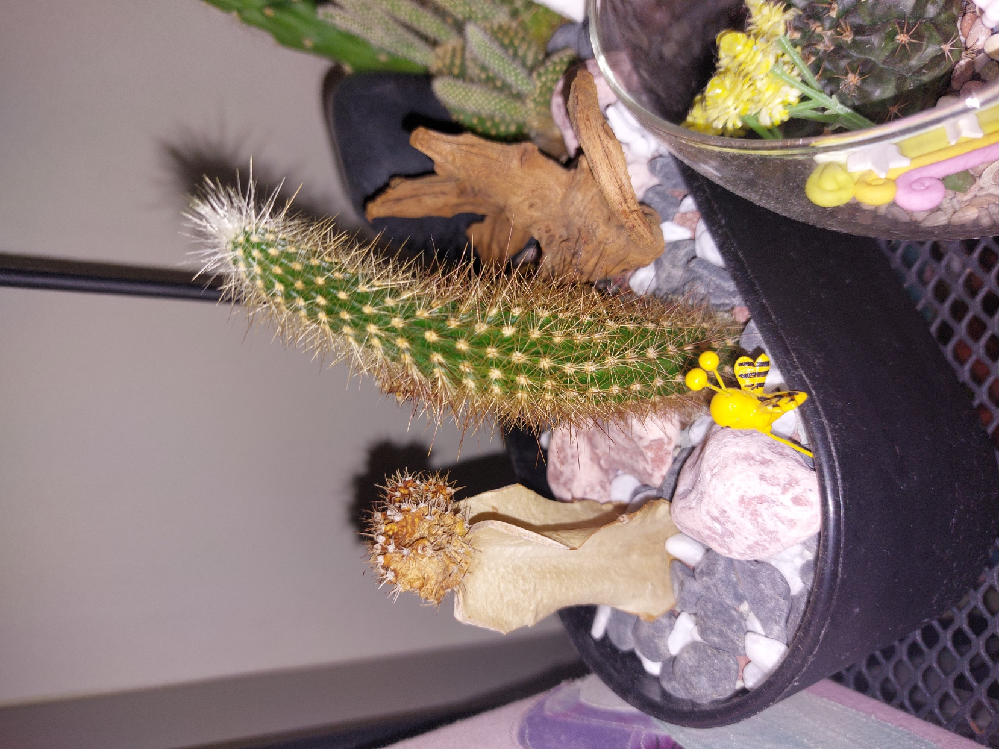

Step 3:
Build it




We used a nema stepper motor to allow the lamp to go up and down, which is controlled by a potential-meter


Identify the problem
 Even cacti can't live in our busy environment: I don't have time to water themCome up with a solution
Build it
Now that I was all done, it was time to test.
 I painstakingly planted seeds strategically across the pot.
I painstakingly planted seeds strategically across the pot.
Get a new moisture sensor